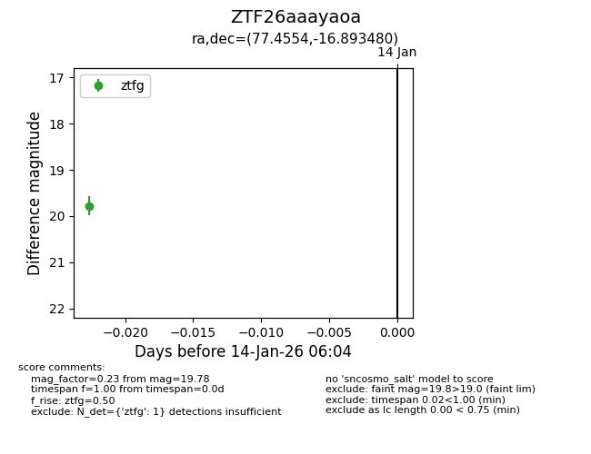
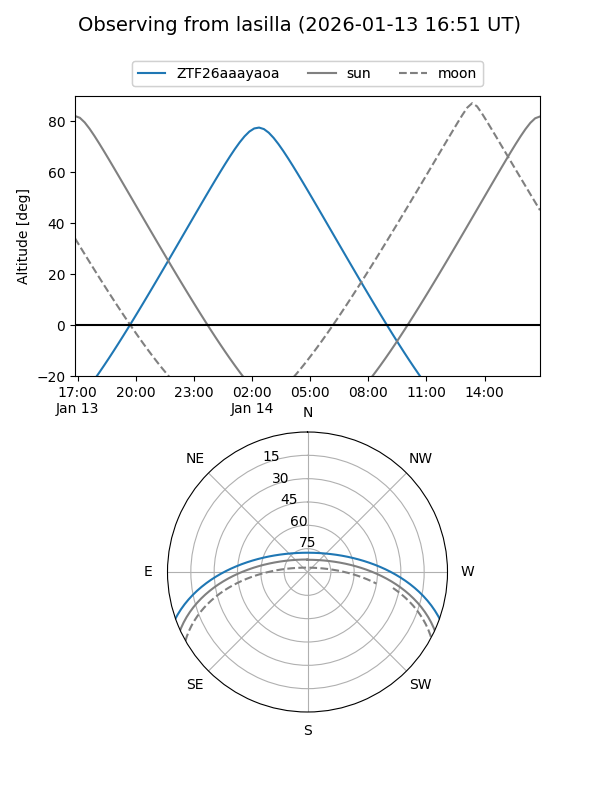
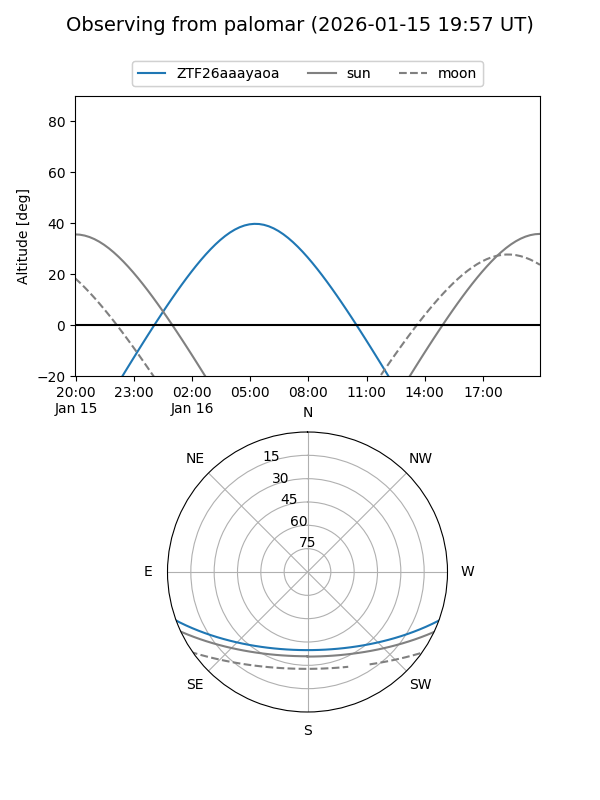

ZTF26aaayaoa
Target ZTF26aaayaoa at 2026-01-14 06:05
Aliases and brokers:
FINK: link
Lasair: link
ALeRCE: link
alt names
ZTF26aaayaoa (ztf,fink_ztf)
Coordinates:
equatorial (ra, dec) = 77.4554,-16.89348
equatorial (HMS+DMS) = 05:09:49.29,-16:53:36.53
galactic (l, b) = (217.6575,-29.85683)
Flags:
Photometry:
last ztfg=19.78
1 ztfg detections
Lightcurve

Visibility


Additional plots